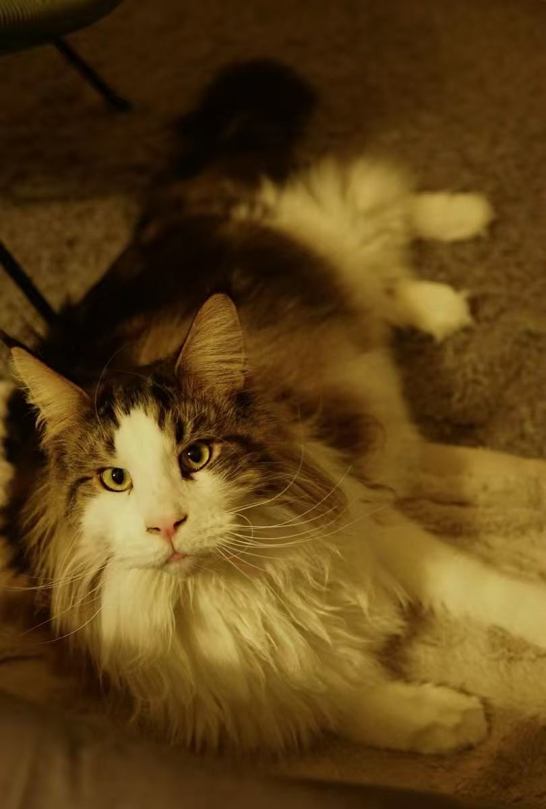
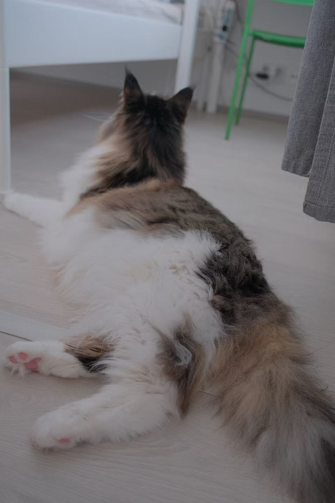
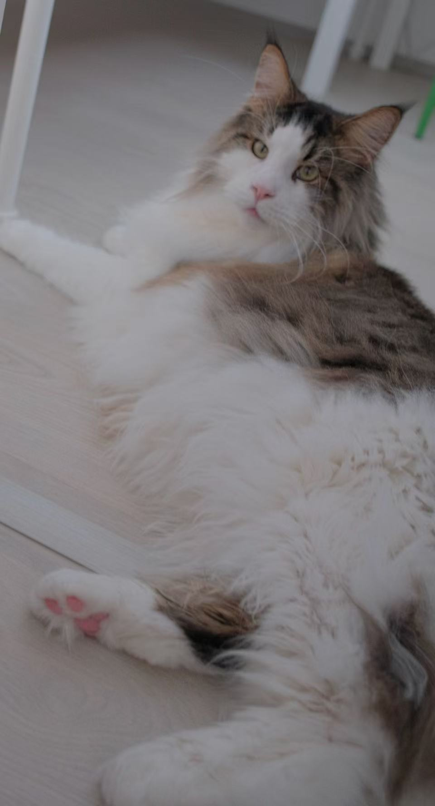
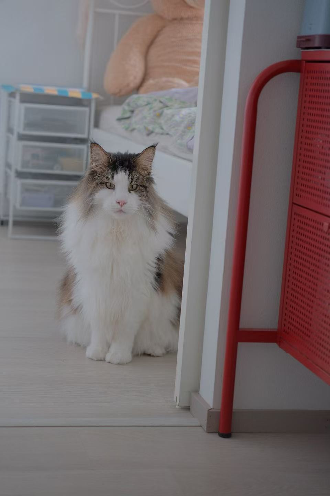
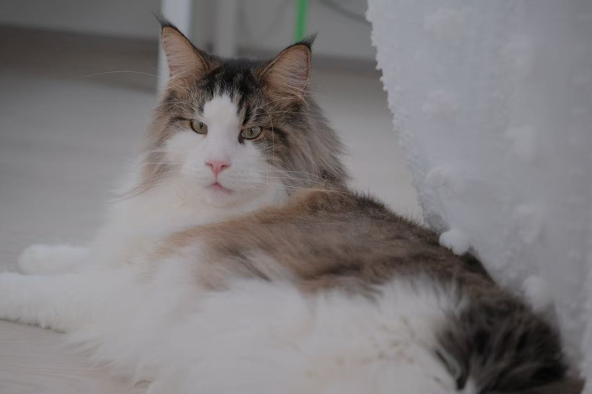
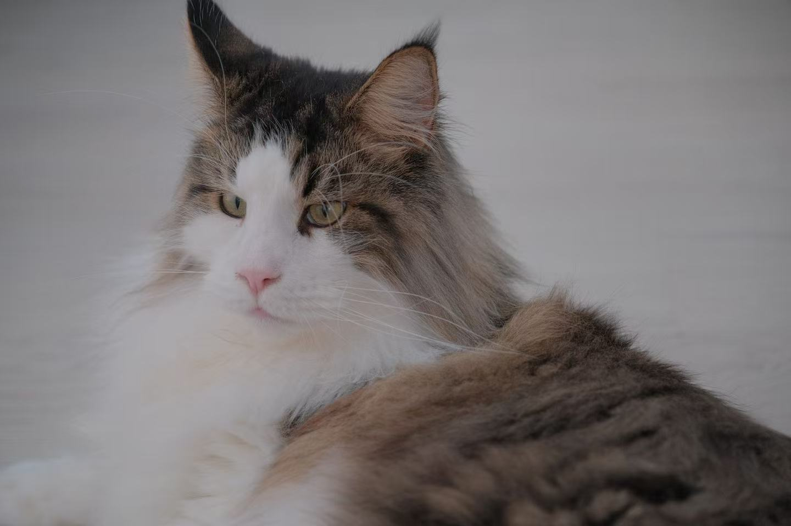
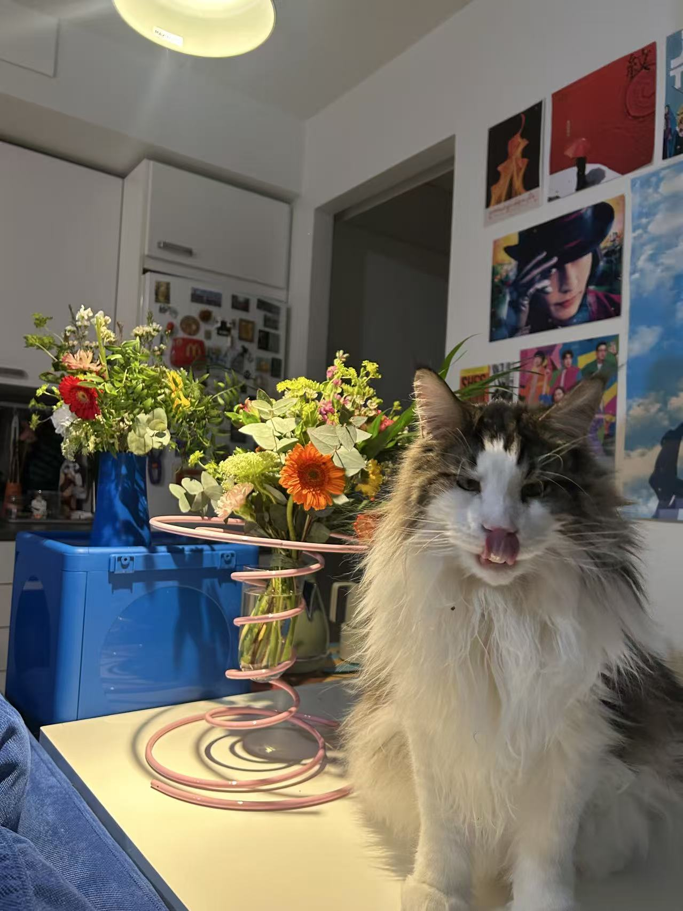
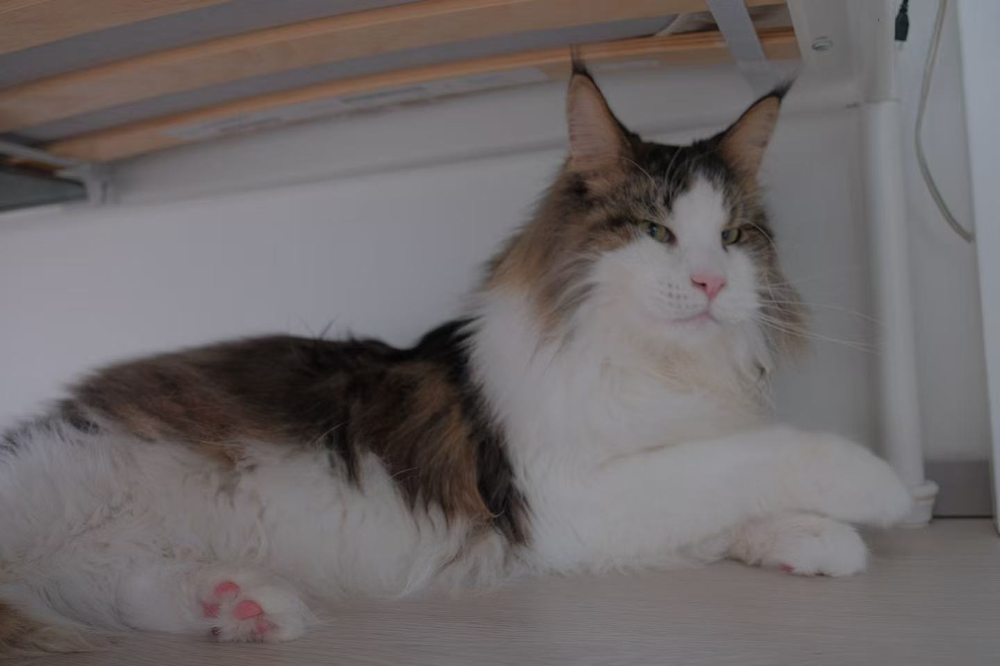
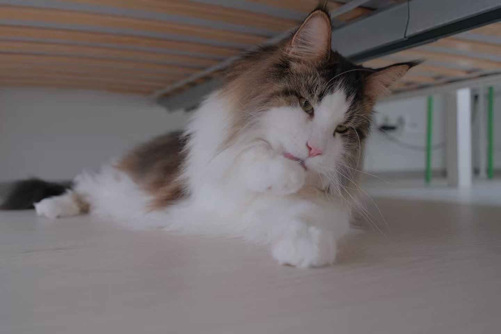

§ 04 · 01 — the cat chapter
ex libris felis
Thranduilthe fluffy
Named after the king of the Woodland Realm, though his own realm is more hallway rug than Mirkwood. A brown-tabby-and-white cloud with golden eyes, a white blaze down the nose, and a ruff that deserves its own weather report. He is long, loud, and suspicious of strangers until he is not — then he is very much not. This room is his: a small archive of sunbeams, paws, and the particular way a Maine Coon takes up a whole sofa while appearing to take up very little of it.









❦
“Not all those who wander are cats —
but in this house, most of them are.”